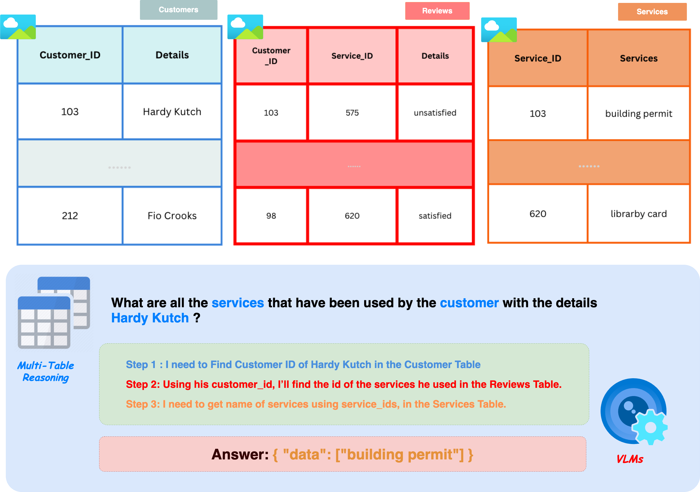

MTabVQA: Evaluating Multi-Tabular Reasoning of Language Models in Visual Space

Vision-Language Models (VLMs) struggle with reasoning over multiple visually presented tables, a common real-world scenario. Existing benchmarks don't adequately assess this multi-tabular visual reasoning. We introduce MTabVQA, a benchmark with 3,745 complex question-answer pairs requiring multi-hop reasoning across several table images. Our evaluations reveal significant VLM limitations. We also release MTabVQA-Instruct, a large-scale instruction-tuning dataset. Fine-tuning VLMs with MTabVQA-Instruct substantially improves their performance on this challenging visual multi-tabular reasoning task.
Our main contributions are:
 Click to jump to each section.
Click to jump to each section.
Traditional benchmarks for table understanding and QA often focus on single-table scenarios or non-visual data. MTabVQA addresses the challenge of robust interpretation and reasoning over multi-tabular data presented as images, common in web pages, PDFs, and digital documents.
MTabVQA-Eval comprises 3,745 complex question-answer pairs. These pairs necessitate multi-hop reasoning by integrating information from two to five visually rendered table images. The benchmark is designed to evaluate how well models can:
Questions in MTabVQA cover 14 distinct reasoning categories, including aggregation, comparison, fact-checking, ranking, and descriptive analysis, ensuring a comprehensive evaluation of reasoning capabilities.
Table images are generated with significant visual diversity (10 distinct styling themes) to mimic real-world appearances, challenging models on robust OCR and layout understanding.
To enhance the multi-tabular reasoning abilities of VLMs, we developed MTabVQA-Instruct, a large-scale instruction-tuning dataset. It contains 15,853 instruction-following examples derived from various multi-table datasets. These examples are designed to train VLMs to understand and follow complex instructions involving multiple visual tables.
Building on this dataset, we introduce TableVision. This model is a VLM (specifically, Qwen2.5-VL-7B as its base) fine-tuned on MTabVQA-Instruct using LoRA (rank 128). TableVision demonstrates the effectiveness of targeted instruction tuning for visual multi-tabular reasoning.
We benchmarked leading open-source and proprietary VLMs on MTabVQA-Eval. The results highlight the difficulty of the task, with open-source VLMs struggling significantly in zero-shot settings. For instance, LLaVA-One-Vision achieved only 2.2% EM and 16.7% F1 overall. Even proprietary models like GPT-4.1 (37.0% EM, 61.7% F1) showed performance limitations, particularly on certain dataset splits.
Our fine-tuned model, TableVision, achieved the highest overall performance (43.4% EM, 68.2% F1), surpassing all other models, including GPT-4.1, on several splits. This underscores the value of targeted fine-tuning with MTabVQA-Instruct.
To explore methods for enhancing VLM performance, we investigated several post-training techniques using a subset of MTabVQA-Instruct (2,395 QA pairs from the Spider data source) with the Qwen2.5-VL-3B model. We compared Supervised Fine-Tuning (SFT), Chain-of-Thought (CoT) prompting, and Group Relative Policy Optimization (GRPO).
SFT yielded substantial performance gains over both CoT and GRPO, boosting EM to 28.0% and F1 to 55.9% on the corresponding MTabVQA-Eval split. This demonstrates the strong effectiveness of targeted instruction tuning for this complex multi-hop reasoning task. While GRPO showed improvement, its gains did not surpass SFT with LoRA, possibly due to the challenge of defining a more sophisticated reward function for visual multi-tabular reasoning.
We further analyzed how VLM performance is affected by the scale and source of data used for instruction fine-tuning. Using Qwen2.5-VL-7B as the base VLM, we fine-tuned it on several MTabVQA-Instruct subsets derived from different original data sources (Spider, MultiTabQA, MiMo+ATIS, and the full MTabVQA-Instruct set).
Generally, more fine-tuning data led to better EM and F1 scores. The model trained on the full MTabVQA-Instruct dataset (15,853 diverse examples) achieved the highest overall F1 score (68.2%). However, the source of the data was critically important. For instance, a model trained only on the large MultiTabQA subset performed surprisingly poorly overall, suggesting that data characteristics and alignment with the benchmark are crucial. This highlights that while scaling instruction data is advantageous, the relevance and diversity of this data with respect to the target tasks are paramount for achieving optimal performance and generalization.
The authors would like to thank the Pangea team for their project webpage template, which served as a basis for this page.
@article{singh2025mtabvqa,
author = {Anshul Singh and Chris Biemann and Jan Strich},
title = {{MTabVQA}: Evaluating Multi-Tabular Reasoning of Language Models in Visual Space},
journal = {arXiv preprint arXiv:YOUR_ARXIV_ID},
year = {2025},
url = {https://arxiv.org/abs/YOUR_ARXIV_ID},
eprinttype = {arXiv},
eprint = {YOUR_ARXIV_ID},
}